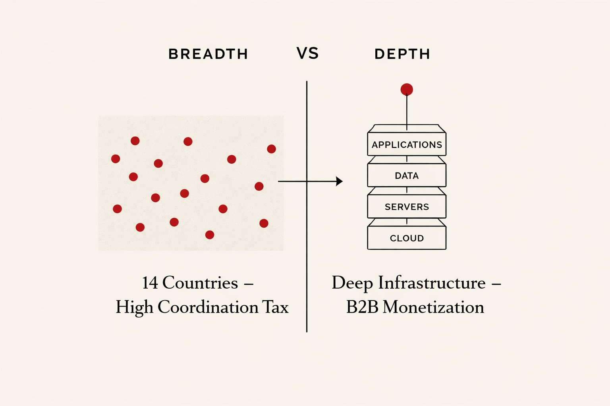
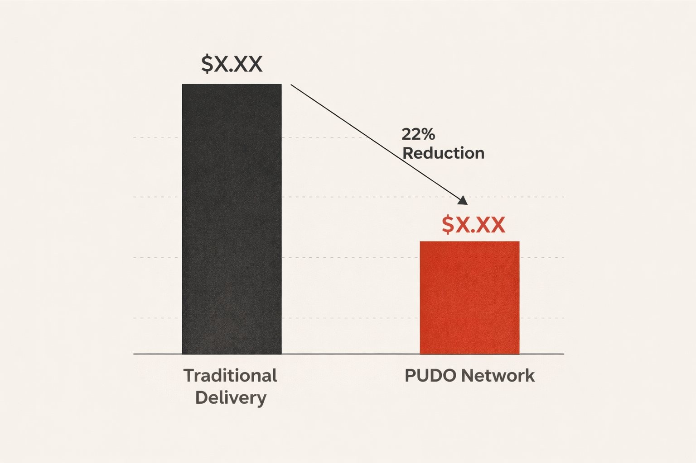
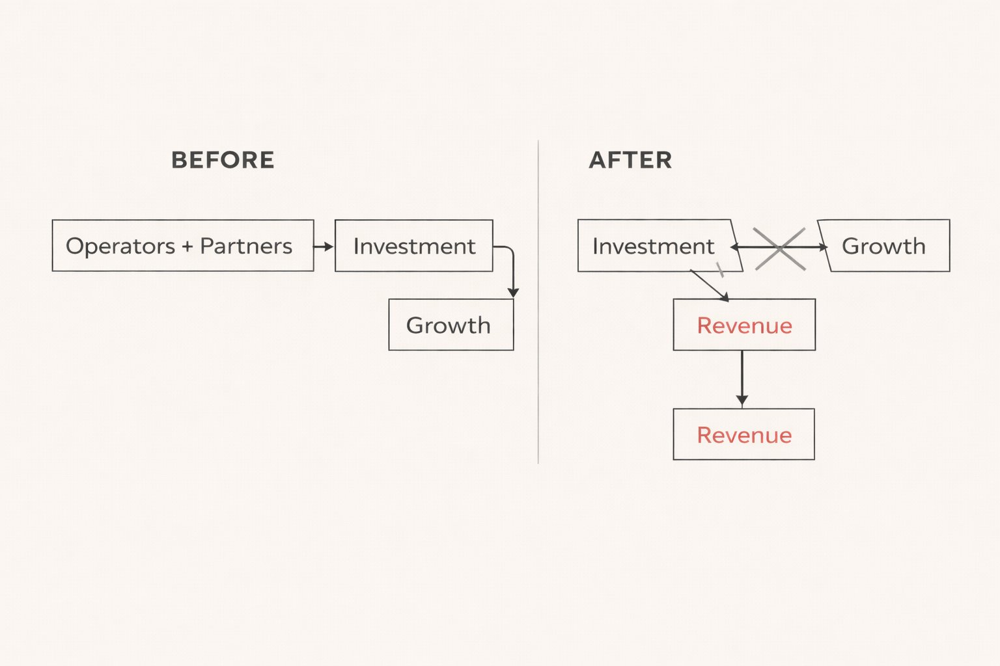

Beyond the Map: What Airtel's Pivot Tells Us About the New Rules of Growth
Airtel Africa is no longer chasing new countries. They're becoming an infrastructure company that happens to have a mobile network.
Read Analysis →Scaling Apps in Emerging Markets
Airtel Africa is no longer chasing new countries. They're becoming an infrastructure company that happens to have a mobile network.
Read Analysis →How Jumia's "Shrink-to-Grow" pivot and the rise of Pickup Stations are redrawing the map of African commerce.
Read Analysis →Why Value-Added Services were misunderstood for a decade, and what broke the investment-delegation model.
Read Analysis →Airtel Africa is no longer chasing new countries. They're becoming an infrastructure company that happens to have a mobile network.
I've been watching the headlines about Airtel Africa's recent restructuring, and it feels like a full-circle moment. For years, the narrative in the "Real Economy" was about the land grab—adding countries, chasing subscriber counts, and showing a map covered in red.
But Airtel just flipped the script. They aren't chasing new flags anymore. They're becoming an infrastructure company that happens to have a mobile network.
Most people see "Data Centers" or "Fiber Networks" as boring back-end costs. But as a Growth Operator, I see them as the ultimate Platform Economics play. By spinning off Nxtra and Telesonic, Airtel is moving from the volatile world of B2C "prepaid" users to the stable, high-margin world of B2B infrastructure.
The Lesson for Scale-ups: Stop obsessing over your total user count if your "plumbing" is leaky. If you've built a tool to manage your logistics or data that is better than the product you're selling—that might be your real business.
Airtel's partnership with Starlink is the ultimate Market Entry "hack". Instead of the grueling process of burying fiber in remote regions, they are "renting" the sky. It's a reminder that being an Operator isn't about owning every part of the chain; it's about orchestrating the most efficient one.
We are entering the era of Unit Economics Validation. The "Coordination Tax" of managing 14 different regulatory environments is too high if you aren't monetizing the core infrastructure. Airtel is choosing depth over breadth. In 2026, the winners in the African tech space won't be the ones with the biggest map, but the ones with the most "indispensable" pipes.
For a decade, Jumia was the poster child for "Burning Cash in Africa." As we hit early 2026, the data tells a different story.
Between 2012 and 2022, the narrative was a cycle of high-level management in Dubai, massive marketing spends, and unsustainable "Last Mile" logistics costs. But under CEO Francis Dufay, Jumia executed a "Shrink-to-Grow" strategy that many VCs once thought impossible for a pan-African giant.
The 2026 Performance Benchmarks. The results of this "Hard Ops" pivot are visible in Q3 2025 and Q1 2026 metrics: fulfillment expense per order has plummeted 22%, reaching approximately $1.86. Revenue surged 25% year-over-year despite a leaner footprint, driven primarily by the Nigerian market.
Why "Pickup" is the new "Moat." Perhaps the most significant shift is Jumia's move away from expensive home delivery. By scaling its network of Pickup Stations (PUDOs) to over 1,500 locations, Jumia solved two problems at once: slashed delivery costs and bridged the "Trust Gap."
Jumia isn't trying to be the "Amazon of Africa" anymore. They are becoming the Logistics Backbone of the continent. By opening their delivery network to third-party social commerce sellers (Jumia Delivery), they've turned their biggest cost center into a new revenue stream.
The End of "Vanity Growth." The 2026 e-commerce landscape is defined by three Hard Ops realities: profitability over perimeter, the rise of Agentic Commerce, and Logistics as a Service. The real winners aren't the companies selling the most shirts — they are the companies moving the most parcels.
A structural analysis of why Value-Added Services were misunderstood for a decade, what broke the investment-delegation model, and why the "premium content" answer misses the real question.
If you have ever worked in or around a telecom operator, you have probably heard some version of this sentence: "VAS are just extra services." That perception is widespread — and it is precisely why VAS have been so poorly understood for years.
What VAS really were. Before app stores. Before widespread card payments. Before subscriptions became the default. VAS enabled telecom operators to monetise non-banked users, expand ARPU beyond connectivity, distribute digital products at massive scale, and turn trust and billing into a platform. In many emerging markets, VAS were the first large-scale digital economy people ever interacted with. They were not elegant. They were effective.
The Investment-Delegation Model: Operators didn't build content; they delegated it to aggregators and studios. The operator provided the infrastructure (billing, distribution, trust), the aggregator managed content and customer experience. This worked because margins were high enough to split three ways: content creator, aggregator, operator.
What broke it. The model worked until it didn't. Margin compression from data bundles, rise of app stores as the default distribution, regulatory pressure on auto-renewals, and WhatsApp/YouTube replacing carrier portals all contributed to its decline.
The Bottom Line. VAS is not about "premium content" — it's about distribution infrastructure. The question isn't "what content should we offer" but "how do we become indispensable pipes for digital services in markets where traditional payment rails are weak?" That's the question that matters in 2026.